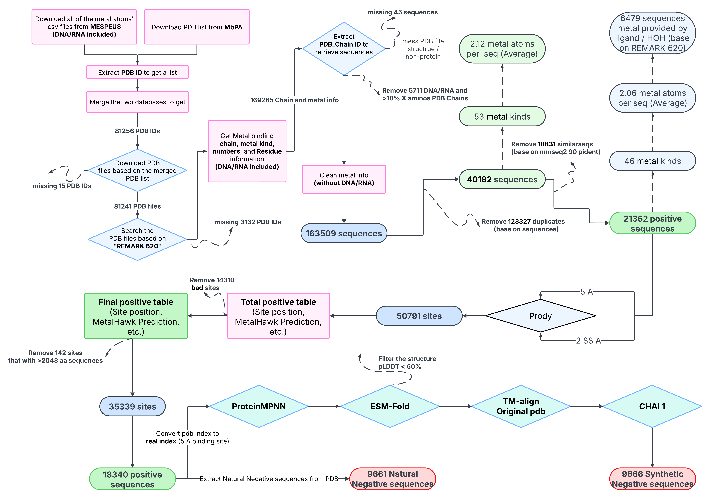
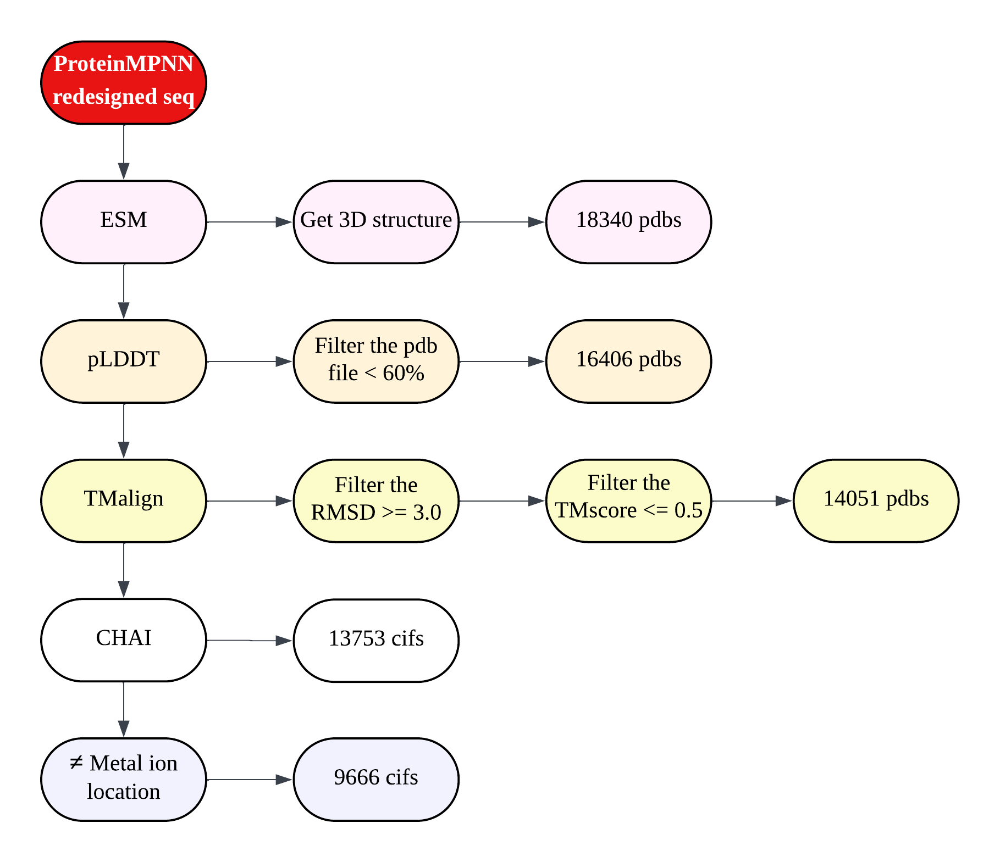
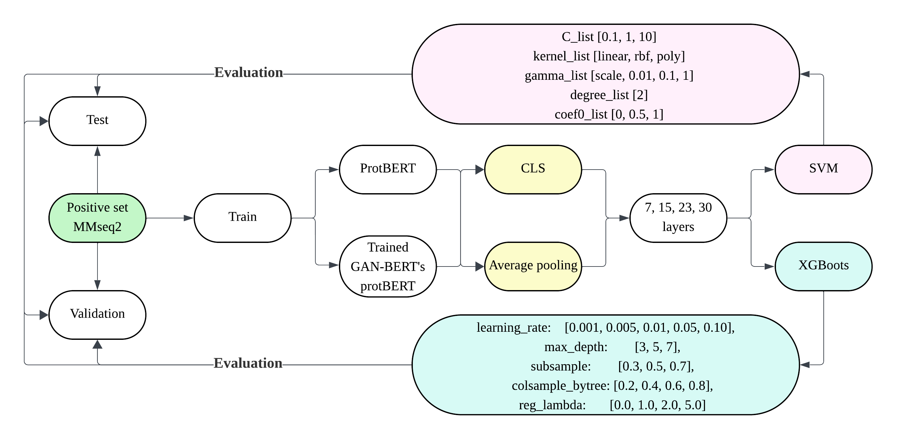
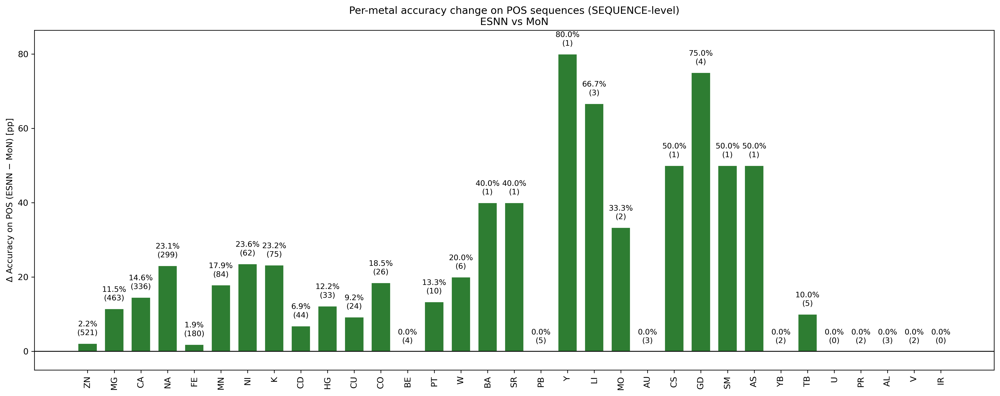

Research scope
Research questions and approach
This project examined two sequence-level classification tasks: identifying proteins represented as metal-binding in structural data, and distinguishing enzyme-annotated metalloproteins from the dataset's “Structural” category. I assembled a chain-level dataset from MESPEUS and MbPA, constructed two sources of negative examples, and compared ProtBERT-based classifiers with different training strategies.
Structural information was used to curate labels, select residue neighborhoods, and screen redesigned sequences. At prediction time, the classifiers use amino-acid sequences or embeddings derived from those sequences. They produce protein-level class labels; they do not locate binding residues, identify a specific metal ion, or measure catalytic activity.
Dataset construction
From structural records to labelled sequences
PDB chain identifiers connect the sequence data to their coordination records and extracted site annotations.

Collect structures and extract coordination records
PDB identifiers from MESPEUS and MbPA were merged and deduplicated. Metal, chain, and residue information was parsed from REMARK 620, which records metal-coordination geometry in the legacy PDB format. This supplied a consistent annotation source for the project, although coverage is incomplete: the absence of this record is not evidence that a structure lacks metal binding.
Retrieve sequences and reconcile residue positions
Positive sequences were retrieved from SEQRES using Biopython, retaining deposited polymer residues that may be unresolved in the coordinates. Sequences with at least 10% X residues were excluded. Identical sequences were deduplicated, followed by MMseqs2 clustering at a 90% identity setting to reduce redundancy.
The redesigned sequences required additional mapping between coordinate-based residue numbering and the deposited sequence. The mapping scripts account for numbering gaps, insertion codes, and missing-residue records. This keeps changes at selected structural positions aligned with the corresponding sequence positions.
Extract and filter site neighborhoods
ProDy was used to extract atom neighborhoods at two distances: 2.88 Å for close-contact annotation and 5 Å for the wider neighborhood considered during sequence redesign. Site filtering checked coordination records, amino-acid neighborhoods, and chain consistency; multichain sites were excluded. Cofactor-associated sites were retained, including sites where close contacts involve a ligand rather than a protein residue. Sequences longer than 2,048 amino acids were removed from the final positive set.
The two distances serve different operational purposes. Neither is a universal threshold for metal affinity or evidence of physiological binding.
Worked example: the Mg site in 13PK
In PDB 13PK, chain D, Mg at residue 422 is 2.38 Å from Asp377 OD2. Lys219 has a nearest atom 4.13 Å away. Asp377 therefore appears in both residue neighborhoods, while Lys219 appears only in the 5 Å neighborhood.
| Protein atom | Distance to Mg422 | Within 2.88 Å | Within 5 Å |
|---|---|---|---|
| Asp377 OD2 | 2.38 Å | Yes | Yes |
| Lys219 CE | 4.13 Å | No | Yes |
| Gly376 N | 4.74 Å | No | Yes |
ADP and phosphate atoms also occur within the close-contact region of this site. A count of nearby protein residues does not include every ligand atom around the metal.
Assign enzyme annotations
Enzyme annotations were merged from BRENDA and PDB records, with BRENDA taking precedence when available. Chain-specific annotations were used when available; otherwise, annotations for the PDB entry were assigned to the chain. Chains without an enzyme annotation in either source were assigned the published category name “Structural.” This is an annotation-derived class, not an experimentally established structural function or proof of absent enzyme activity.
| Dataset quantity | Count |
|---|---|
| Positive protein sequences | 18,340 |
| Retained site records | 35,339 |
| Element categories in site annotations | 44 |
| Enzyme-annotated / “Structural” sequences | 10,447 / 7,893 |
Negative-set construction
Two sources of negative examples
Synthetic negatives
ProteinMPNN redesigned residues in the 5 Å neighborhoods while other positions were fixed. Ten candidates were generated per sequence, and the candidate with the largest redesign rate was retained. Temperature 1.0 and negative biases for C, D, E, and H were used to encourage changes at commonly observed coordinating residues.
Redesigned sequences were screened with ESMFold and TM-align: mean pLDDT ≥60, RMSD <3 Å, and TM-score >0.5 (normalized by predicted-chain length). These checks assess prediction confidence and similarity to the reference structure; they do not establish physical stability.
CHAI-1 predictions were then assessed using the 2.88 Å contact criterion. A redesigned sequence was retained only when all five CHAI-1 outputs were labelled “not interacting” or “Changed position,” indicating no contact overlap with the reference residue positions used by the check. The final set contains 9,666 synthetic sequences. These are computationally screened negatives: the procedure aims to disrupt reference-site contacts, but does not experimentally confirm loss of all metal binding.

Natural negatives
The second set was obtained from other chains in the same PDB complexes that lacked the selected metal-binding annotation. Duplicate sequences and unsuitable sequence records were removed, yielding 9,661 natural negative sequences. This supplies a separate sequence distribution from the redesigned negatives, but annotation absence may introduce false negatives.
Model development
Three classification tasks
ProtBERT representations (from the ProtBERT-BFD checkpoint) were used with adapter fine-tuning, semi-supervised GANBERT, and conventional classifiers. Sequence clustering was used during dataset partitioning to reduce relatedness across splits. The three tasks use different training populations and task-specific partitions.
| Model | Labels and data | Approach |
|---|---|---|
| MoN Metalloprotein or Not | Metal-binding versus negative; includes positive, synthetic, and natural sequences. | ProtBERT adapters trained in five folds; predictions combined by majority vote. |
| EoS Enzymatic or Structural | Enzyme-annotated versus “Structural”; uses metalloprotein sequences. | GANBERT, embedding-based SVM and XGBoost, followed by an MLP ensemble using their output scores. |
| ESNN Enzymatic / Structural / Natural Negative | Three classes; uses positive sequences and natural negatives. | Class-weighted XGBoost on mean-pooled ProtBERT embeddings; layers 7, 15, 23, and 30 were compared. The reported model uses layer 15. |
For EoS, the experiments compared pretrained and fine-tuned representations, CLS vectors and mean pooling, and several transformer layers. Class weights were calculated from training-label frequencies for SVM and XGBoost; the MLP ensemble used upsampling of the minority class. GANBERT additionally used unlabeled sequences in adversarial training, while its generator produced synthetic embedding vectors from random noise.

Evaluation
Reported internal test results
The table summarizes the saved evaluations. F1 definitions and evaluation populations are specified because the tasks are not directly interchangeable.
| Evaluation | Test sequences | Accuracy | F1 | F1 definition |
|---|---|---|---|---|
| MoN · all negative sources | 3,768 | 76.59% | 75.90% | Metal-positive binary F1 |
| MoN · synthetic negatives excluded | 2,819 | 78.61% | 82.17% | Metal-positive binary F1 |
| EoS · reported MLP ensemble | 1,835 | 74.11% | 72.93% | Enzyme-positive binary F1 |
| ESNN · three-class task | 2,801 | 68.87% | 69.20% | Macro F1 across three classes |
| ESNN · metal / non-metal grouping | 2,801 | 86.15% | 90.01% | Metal-positive binary F1 |
ESNN's binary result combines the enzymatic and “Structural” classes into the metal-binding class without retraining. It uses the ESNN test partition, which differs from MoN's. The higher score therefore does not isolate the effect of model architecture, training data, or the choice of negative examples.
Interpretation
The experiments support the use of protein language model representations for these annotation tasks, with remaining difficulty in distinguishing the two metalloprotein classes. In ESNN, recall for the “Structural” class was 56.6%, compared with 70.2% for the enzyme-annotated class and 83.7% for natural negatives. MoN's results also depended on whether synthetic negatives were included in evaluation.
The reported EoS ensemble has a modestly higher test accuracy than the best reported single XGBoost model (74.1% versus 73.2%). However, its quoted configuration comes from a test-ranked experiment summary. Some model comparisons consulted test performance, so these results are exploratory internal evaluations rather than an independently validated final benchmark.
Per-metal analysis from the thesis

Scope of the evidence
Limitations and further work
- Label uncertainty. Coordination annotations are incomplete. The “Structural” category and natural negatives depend on missing annotations, while synthetic negatives depend on predicted structures and contact checks.
- Structural sampling. The data are drawn from deposited PDB structures, without a systematic experimental-method or resolution filter. A metal present in a structure need not have a physiological role.
- Uneven coverage. Although 44 element categories occur in the site annotations, Zn, Mg, Ca, Fe, and Na account for approximately 85% of sites. Representation of a category does not establish reliable prediction for rare ions.
- Evaluation design. Cluster-based partitioning reduces some sequence redundancy but does not by itself establish complete homology isolation. Different task partitions and test-set consultation limit comparative conclusions.
Further evaluation would benefit from a fixed external test set, model selection restricted to training and validation data, and experimentally supported labels for non-binding and non-enzymatic proteins. Direct measurements of redesigned proteins would also test whether the computational screening criteria correspond to changes in metal affinity.
Code and documentation
Implementation
The interactive code sample presents two selected scripts from the ESNN workflow: extraction of fixed-size ProtBERT embeddings from predefined sequence splits, followed by class-weighted XGBoost training and evaluation. It includes the input format, execution order, and exported predictions and metrics.
Methods and results are documented in the thesis. This description also uses the dataset and evaluation scripts, retained result tables, and research records (Note.md, Record.md, and Dairy.md) to distinguish exploratory work from the final datasets.
The worked example can be checked in the 13PK coordinate file. The meaning of the coordination record is described in the wwPDB format documentation.